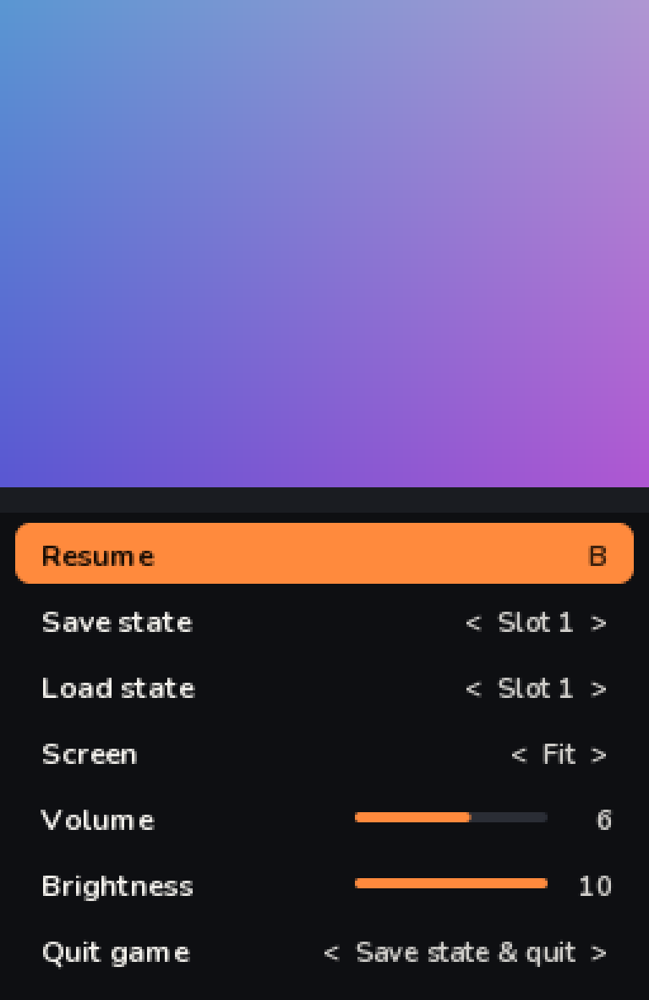
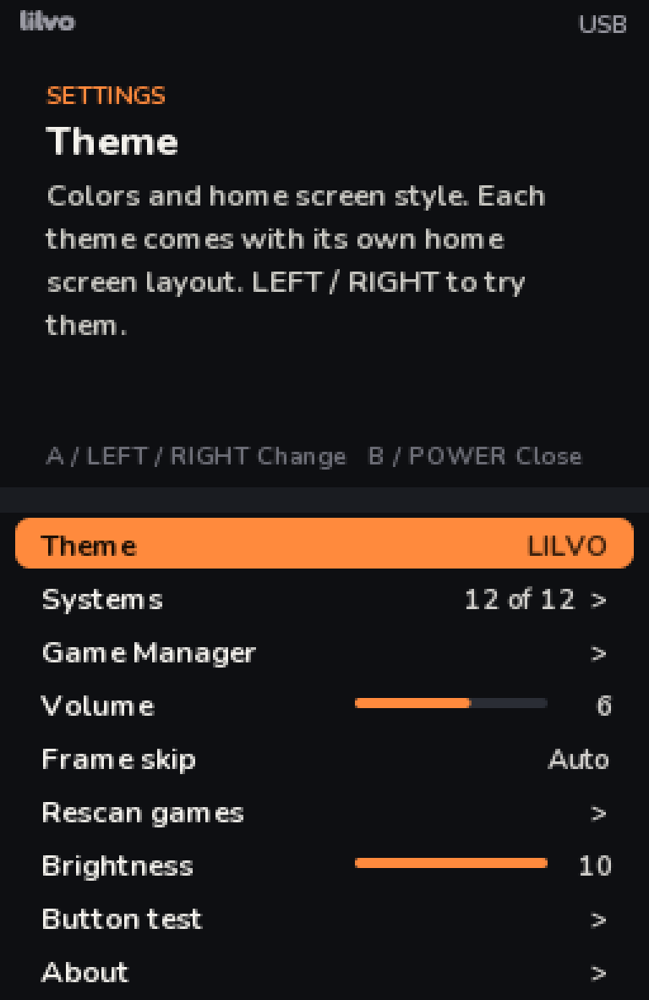
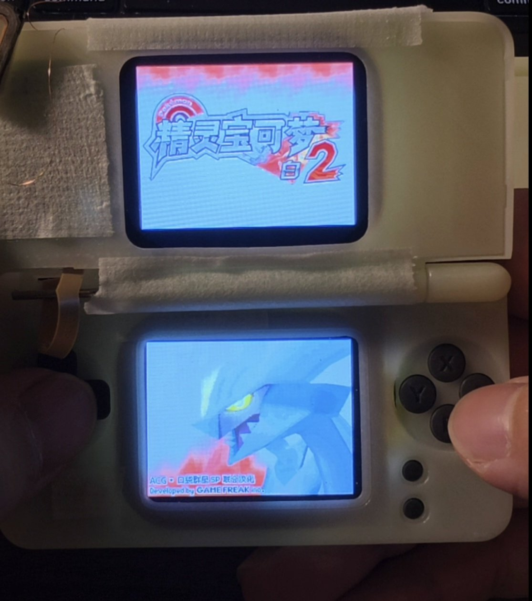

Build log / Oct 26, 2026
lilvo system 1.0
One week after the first board lit up, I'm calling the system 1.0. It isn't finished, but it does everything I wanted on day one, and it's what I'll build the next round on.
What's in 1.0
- Launcher with the Shelf home: spinning 3D console on top, cartridges below, A–Z index on the edge.
- 12 consoles. DS through DraStic. GBA, Game Boy, Game Boy Color, NES, PlayStation, PC Engine, Master System, Game Gear, Neo Geo Pocket, WonderSwan and Lynx through open-source libretro cores, behind a small front end I wrote.
- Save states: four slots per game, each with a screenshot, plus an automatic one when you quit.
- Close the lid: the game is saved, then the console turns off. Open it and you continue from that moment.
- Battery safety: at low battery it warns you; when it's empty it saves and shuts down by itself.
- Files and updates from a browser at lilvo.local (more in this post).



Saves come first
The thing I care about most is never losing a save. Every save is written to a temporary file, flushed, then renamed into place, so a power cut can only lose the save in progress, never the old one. Game saves are also kept with a short history, so a bad save can be rolled back from the web page.
Built for 128 MB
My dev board has 256 MB of memory, but the chip I'd use in a final version has 128 MB. So 1.0 is tuned to run within 128 MB, including uploading a 600 MB disc image over USB without the system choking.
From 1.1 on, every update goes through the web page instead of my laptop's terminal. It's the best way to make sure that path really works.